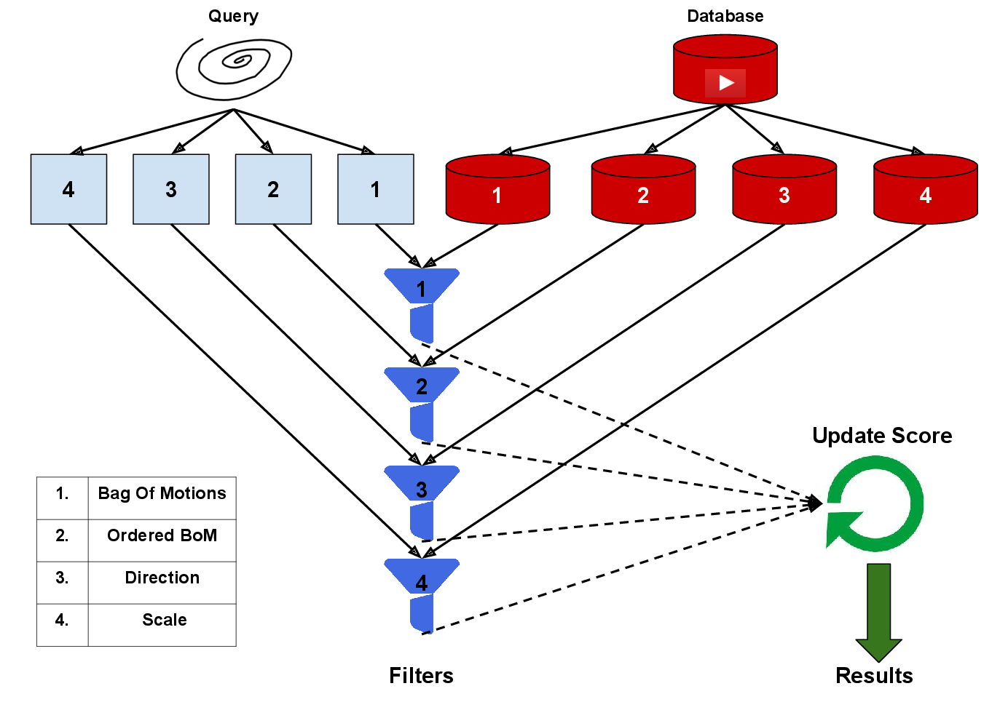
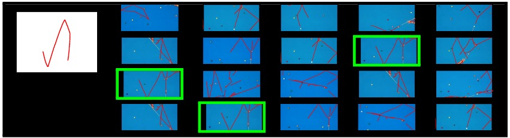
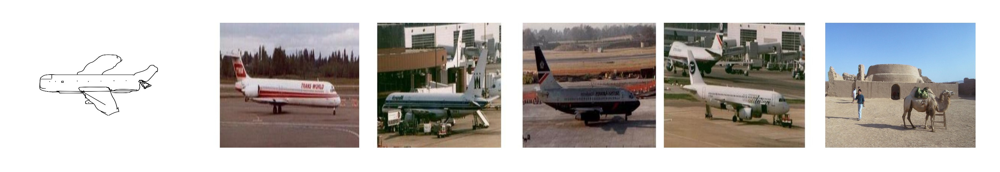
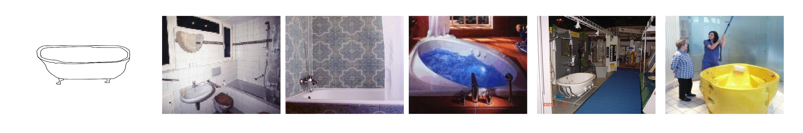
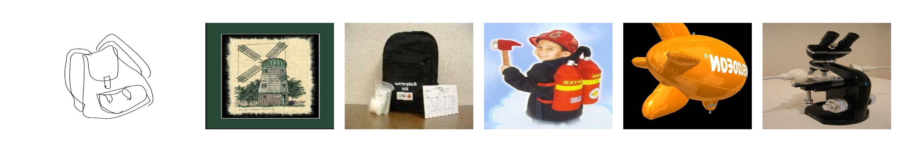
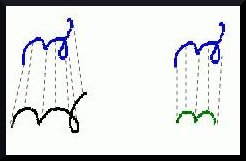
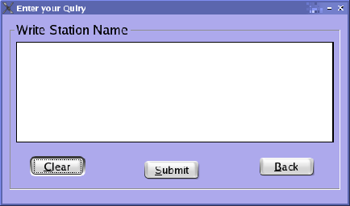

This project was a part of my master's thesis at CVIT . The objective of this project was to develop a multimedia retrieval system in which the mode of query is a hand-drawn sketch. A simple hand-drawn sketch is an effective way to summarize the content of an image or a video where the right keywords are imprecise and difficult to articulate or example images/videos are unavailable. It can also be considered to be closer to the content of the image/video than text, which operates on the meta-data (tags,comments) space.
In the first phase of the project, we developed a retrieval framework for videos. Objects in the videos were tracked the motion trajectories were extracted. These motion trajectories were compared with the user sketches and a multi-level retrieval strategy was developed. A circle-based representation for the user-sketches was proposed with the objective of eliminating the perceptual variabilty among users while skecthing the same trajectory.
|  |
| Multilevel Retrieval Strategy : The query and original videos in the database ( top-left and top-right ) are processed and four sets of features are derived in each case. There are four different levels of filtering ( four blocks vertically arranged at the center ). The functionality of each filter has been shown in the table ( bottom-left ). After each level of filtering, the score is updated by the score update module ( bottom-right ). The videos are retrieved based on the final score. |
|  |
| Results : The figure on the left is the query. On the right, the four rows correspond to the four stages of our filter. Elements in each row correspond to the top 5 results at each iteration, after the score is updated. The exact match is highlighted in green. At the first level, the exact match is not found in top 5. But it appears after Stage 2 and maintains its position within the top 5 results till stage 4. |
In the second phase, we developed a retrieval framework for images. Unlike traditional sketch-based image retrieval systems which compare edge-based features extracted from images with the sketches, we proposed a multi-modal approach, in which the sketches and images were trained together and mapped to a lower dimensional subspace using Canonical Correlation Analysis (CCA), where they were maximally correlated. We used Cluster – CCA, an extended version of the traditional CCA .
|  |
|  |
|  |
Example results of our image search algorithm. The queries on the left are example images taken from the TU-Berlin dataset and the results on the right are from Caltech 256 dataset. The first two rows corresponding to sucessful cases of search, where as the last row pertains to a failure case. |
Finally, we tried to extend the image retrieval engine to work for unknown classes, using zero-shot learning approaches and deep features. Based on an available knowledge corpus, we are trying to build a retrieval system which captures the semantic similarity among the different classes. Most of the existing zer-shot techniques are tuned for classification and peform pretty poorly in case of retrieval. We are trying to alleivate this problem by using new and robust features using Deep Neural Networks. It's an on-going work.
In this project we tried to build an online handwriting recognizer for Indian languages.In India, in each script there are various handwriting styles that vary according to the region, making recognition a challenging task. However with the surge of use of handheld devices like smartphones and tablets in academia, industry and public sectors a need for a handwriting recognizer is crucial.
|  |  |
The objective of this project was to develop a paragraph level sentence recognizer for seven different Indian languages – Bengali, Hindi, Asameese, Punjabi. Tamil, Telugu and Malayalam. It was project funded by Department of Science and Technolgy, Government of India and a collaborative work of seven universities.
In IIIT Hyderabad, we worked for Malayalam language. We built a 140 class character, digits and symbol recognizer for Malayalam using ballistic features and support vector machines. The engines were developed both for windows and android. In windows, the architecture was developed in C++ in Microsoft Visual Studio Environment using open source machine learning libraries. It was later ported to Android using Android NDK.
This was a project in Natural language Processing at Communication Empowerment Laboratory ,Indian Institute Of Technology , Kharagpur under the guidance of Prof Anupam Basu. I worked as an intern for three months after my B-Tech and before joining IIIT Hyderabad as a MS (by research) student . The task was to build a web based application to check the readability of documents in Indian Languages based on the state of the art methods.
This internship introduced me to the area of Machine Learning and Natural Language Processing. From a huge corpus of text data we mined the most frequent words, removed stop words and built dictionaries of words and syllables. Using that dictionary and latent semantic analysis, we were able to to develop a system which checked the readability of Indian documents. We used the standard metrics like Flesch Score, SMOG Index, Coleman Liau Score and Gunning Fox score to ascertain the scores. We used Python, and Web2Py framework to build the system.
This project came as a part of the course Statistical Methods in AI, taken by Prof. Anoop Namboodiri, in which we were asked to implement the paper Face recognition using eigenfaces,Turk et al. This project gave me a hands on experience in concepts related to dimensionality reduction techniques and application of linear algebra in Computer Vision problems. The implementation was carried out in python.
This project was a part of the course Machine Learning, taken by Prof. C. V. Jawahar, in which we had to implement a classifier on the Caltech 256 dataset and carry out exhaustive experiments using different kernels and sample size. This project introduced me to classifiers and kernels and helped me to develop fundamental concepts of ML like dimensionality, regularization and overfitting. This project was implemented in Python using OpenCV and Scikit-Learn libraries.
This project came as a part of the Computer Vision course, taken by Prof. P. J. Narayanan, and we were asked to implement a retrieval framework for the Caltech 256 image categories using SIFT, SURF and HARRIS corners. Using a BOW representation for the features, we had to build an inverted index structure using tf-idf metrics. This project introduced me to information retrieval problems and also to features as mentioned above. I also got introduced to several clustering and optimization techniques. The implementation was carried out in Python, OpenCv and Scikit-Learn. We used Web2Py framework for hosting the engine.
This project was a course project for Introduction to Cognitive Science, taken by Prof Priyanka Srivastava, where we implemented a system that tested the effect of human learning in audio-spatial working memory. This study was conducted as part of a project which aimed at developing a sound based assistive navigation system for the visually challenged people. We experimented by varying several sound parameters like pitch, pan and rhythm and observed it's effect on a person's ability to learn the spatial properties of these sound parameters. Ww published our findings as a poster in Spatial Cognition 2014, Bremen, Germany. Please check our report at the publication section.